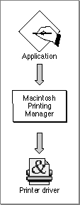
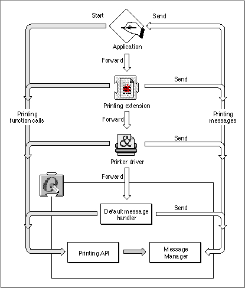

About the Message Manager
On Macintosh systems in which QuickDraw GX is not installed, the Macintosh Printing Manager calls the printer driver by loading appropriate code resource for the printer driver, as shown in Figure 6-1.Figure 6-1 Printing with the Macintosh Printing Manager

In contrast, QuickDraw GX provides a low-level software manager called the Message Manager to transfer control to the printer driver. Whenever an application makes a printing call, QuickDraw GX interacts with the printer driver by calling the Message Manager to request that the appropriate message be sent to the printer driver. QuickDraw GX printing extensions may be inserted between QuickDraw GX and the printer driver to modify the behavior of printing without changing the printer driver. This approach greatly increases the flexibility of printing and allows printing enhancements to be developed quickly and easily. Figure 6-2 shows the relationship of the QuickDraw GX printing software components.
Figure 6-2 Printing with QuickDraw GX

QuickDraw GX predefines over a hundred messages. An application starts the printing process by calling the QuickDraw GX printing application programming interface (API). QuickDraw GX may perform the task itself or call the Message Manager to send one or more messages to the application to initiate one or more steps in the following sequential message chain: application, printing extensions, printer driver, and the default message handler.
The key to the QuickDraw GX extensible printing architecture is the sequential relationship of the application, printing extensions, printer driver, and default message handler for printing. Applications, printing extensions, and printer drivers are located in the message stream so that they may override messages before the message gets to the default message handler. This is the end of the line for any message that makes it to the end of the chain. QuickDraw GX defines the normal printing characteristics that occur unless modified by an application, printing extensions, or the printer driver. Printing modification may occur when one or more messages are overridden. QuickDraw GX sends a large number of printing messages during the printing process. Since many messages are not normally overridden, QuickDraw GX provides a default printing behavior for most messages via the default message handler.
A partial message override occurs when the application, printing extensions, or printer driver perform one or more tasks in response to a message and then forward the message to the next step in the message chain. A complete message override occurs when the application, printing extensions, or printer driver perform one or more tasks in response to a message and do not forward the message to the the next message handler in the chain. Any message that is not explicitly overridden by a printing extension or printer driver is implicitly forwarded to the next link in the sequential message chain. A complete override of a message prevents the next extension, printer driver, or default implementation in the chain from receiving the overridden message.
The Message Manager is not the only initiator of messages. Applications, printing extensions, printer drivers, and QuickDraw GX not only make printing function calls, but they can also initiate messages.
For additional information about printing with QuickDraw GX, see Inside Macintosh: QuickDraw GX Printing. For additional information about how to use the QuickDraw GX Message Manager and messages, see Inside Macintosh: QuickDraw GX Printing Extensions and Drivers.
Subtopics
- Message Terminology
- Global Data Storage for Printing Extensions and Printer Drivers
- Message Sending and Forwarding